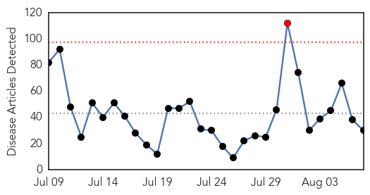
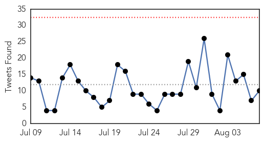
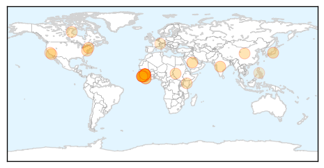
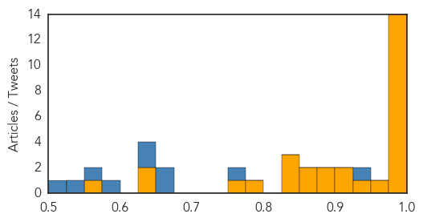
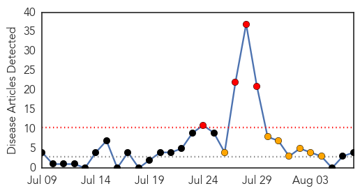
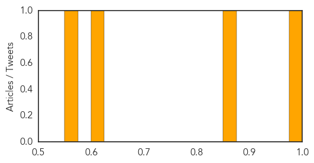

Ebola
30-Day Web Trend
1 alerts, 0 warnings

30-Day Twitter Trend
0 alerts, 0 warnings

Article Locations
Article Confidences
Top Articles:
- 1.000
- Ebola Virus Disease
- 1.000
- Sierra Leone has just 4 cases of Ebola, official says
- 1.000
- Study Shows Dose of Vaccine Protects Monkeys From Ebola
- 1.000
- Fear, treatment and a serum: The US and the Ebola outbreak
- 1.000
- Ebola-hit Guinea calls for calm after attack on aid group
- 1.000
- The end of Ebola in sight in Sierra Leone, says NERC Chief Palo Conteh
- 0.998
- Pronouncement by President Dr Ernest Bai Koroma on the extension of State of Public Emergency
- 0.997
- IdahoLiberty.com
- 0.996
- An emergency within an emergency: caring for Ebola survivors - Sierra Leone
- 0.994
- President Koroma Extends State of Emergency Ease Some Restrictions
- 0.992
- Hamilton scientists develop vaccine for most deadly Ebola strain
- 0.986
- World On Verge Of Effective Ebola Vaccine
- 0.981
- Sierra Leone to remove certain restrictions over Ebola - Xinhua
- 0.977
- Community Trust and the Ebola Endgame
- 0.964
- Expect more Ebola cases > IGIHE.com English Version
- 0.943
- College Students Still Largely Misinformed About Ebola
- 0.910
- Distinct lineages of Ebola virus in Guinea during the 2014 West African epidemic
- 0.908
- Ebola vaccine found safe, effective in monkeys
- 0.889
- China’s Support to Sierra Leone for Combating Ebola
- 0.883
- A plague case in California
- 0.867
- Chinese Foreign Minister Heads for Ebola Hit MRU Nations
- 0.867
- Tokeh Village to Benefit from $78,000 Ultra-modern Health Centre
- 0.843
- What the ‘game-changer’ Ebola vaccine says about Canadian R&D
- 0.832
- An Ebolavirus vaccine in Africa
- 0.827
- Recently developed Ebola vaccine made from GMO Tobacco
- 0.782
- Filipino Peacekeeoers To Pullout In Liberia, Golan
- 0.768
- University students still largely wrong about Ebola – Reuters
- 0.633
- ‘Community Mobilization Inspired Liberia’s Fight Against Ebola
- 0.629
- Aug. 7 news: School start times, infant mortality, vaccines
- 0.557
- Taiwan, US to hold workshop ...｜Society｜WCT
Top Tweets:
- 0.995
- Familiar drugs may block Ebola virus infection - Medical Xpress http://t.co/flFgqbijOX ebola EVD
- 0.960
- Ebola survivors face lingering health complications - USA TODAY http://t.co/eD4NvoD11y ebola EVD
- 0.925
- CDC Head Cautions Over LessonsLearned From Ebola Virus http://t.co/Rdeg766MZx via
- 0.912
- Thousands of Ebola survivors face severe pain, possible blindness - Reuters http://t.co/4YDDoaIEnS ebola EVD
- 0.905
- College students still largely misinformed about Ebola - WHTC http://t.co/V9QwWSMfx4 ebola EVD
- 0.881
- RML scientist publishes major study on Ebola vaccine - Ravalli Republic http://t.co/xTpOpYGo6z ebola EVD
- 0.881
- RML scientist publishes major study on Ebola vaccine - Ravalli Republic http://t.co/mAarxQolAP ebola EVD
- 0.850
- Single dose of Ebola vaccine works rapidly in monkeys - Los Angeles Times http://t.co/drHKKaAfSY ebola EVD
- 0.840
- Ebola survivors face joint, eye complications - CBC.ca http://t.co/WfFtlwa3Yb ebola EVD
- 0.833
- College students still largely misinformed about Ebola - Fox News http://t.co/ObQYS1yeOZ ebola EVD
- 0.776
- Saving Lives: The civil-military response to the 2014 Ebola outbreak in West Africa http://t.co/KWMaKI8OGR
- 0.679
- Can only guess how mny lives might have been saved if vaccine had passed muster b4 outbreak, rather than after Ebola http://t.co/qSgQgnuMff
- 0.670
- RT: WHO asks me to help recruit health experts to help Sierra leone recovery after Ebola: http://t.co/aVWqLViFrZ search for F…
- 0.658
- International Emmys: CBC's Ebola coverage earns nomination - CBC.ca http://t.co/aTyAyrei87 ebola EVD
- 0.640
- Ebola: Bringing communities on board is crucial to reach zero cases UNICEF http://t.co/4rMxELTe43
- 0.615
- What the 'game-changer' Ebola vaccine says about Canadian R&D - The Globe and Mail (subscription) http://t.co/RTzq3oKFiS ebola EVD
- 0.609
- Ebola terrified us a year ago. What did it teach us about West Africa? - Washington Post (blog) http://t.co/sIWAyQ50gK ebola EVD
- 0.593
- Ebola survivors face lingering health complications - USA TODAY http://t.co/hW0TrVFwdo
Hepatitis
30-Day Web Trend
4 alerts, 7 warnings

30-Day Twitter Trend
1 alerts, 0 warnings

Article Locations

Article Confidences
Top Articles:
Top Tweets:
-
No tweets found for Aug 07, 2015